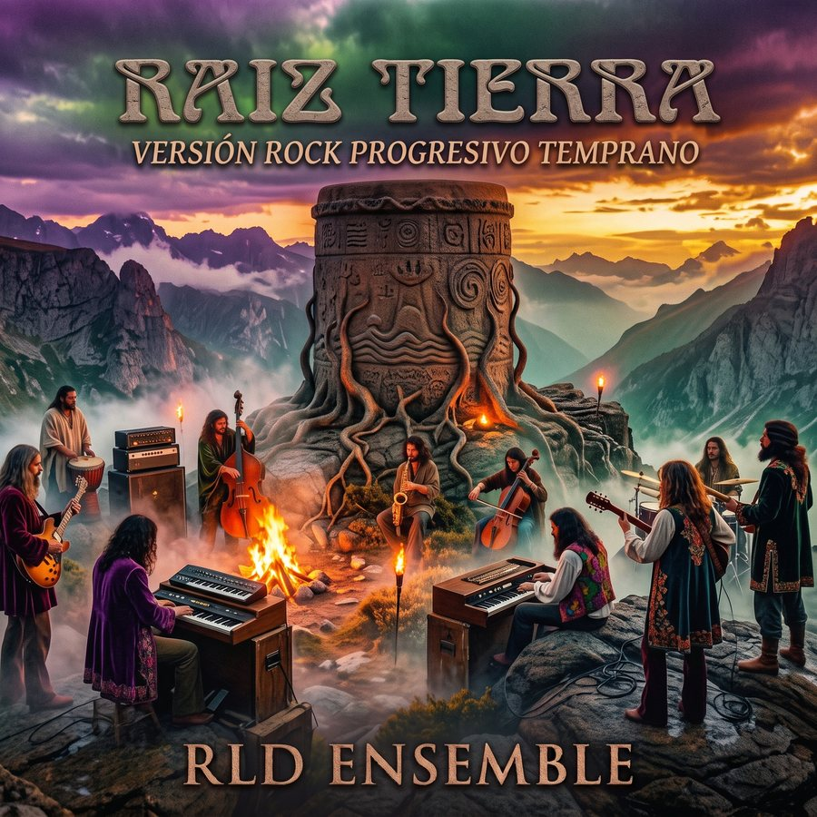
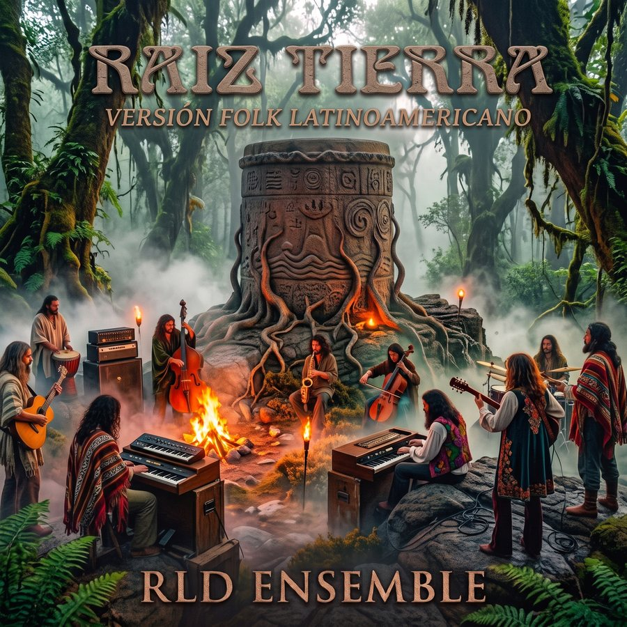

Tambor de Piedra · Álbum 03
Raíz de Tierra
Las Voces del Silencio · Honduras, 1983
La tercera obra de la trilogía baja del mar y de la piedra a la tierra de Olancho: una obra en dos actos sobre la memoria, la fe y los nombres que el bosque todavía guarda.
La obra
LAS VOCES DEL SILENCIO: HONDURAS 1983
Una cantata moderna en dos actos sobre la columna que entró a Honduras desde Nicaragua en julio de 1983 y se perdió en la montaña de Olancho. La cuentan dos hombres: José María Reyes Mata, «Chema», médico y estratega de la columna, y James «Guadalupe» Carney, «Padre Lupe», jesuita que marchó como capellán sin armas.
No es un panfleto ni un parte de guerra. El clímax no es el combate sino la pregunta que los une: quién está al lado del pobre, y a qué precio. La última pieza vuelve al presente y planta un árbol donde no hubo tumba.
Dos caminos hacia una misma selva, hasta la noche antes de cruzar el Río Coco.
La lluvia, el hambre, el cerco y las dos muertes. Al final, el bosque de la memoria.
Álbumes gemelos
UN LIBRETO, DOS ÁLBUMES

La obra contada con guitarra, voz y la tradición de la trova y el folk latinoamericanos.
MASTERIZADA ✓
El mismo libreto y las mismas 14 pistas, con el sonido del rock progresivo de los primeros años setenta.
MASTERIZADA ✓
Tracklist
LAS CANCIONES
Una recreación artística basada en hechos reales. Los personajes históricos son homenajeados con su nombre; las figuras del poder se representan como arquetipos.
Escuchar en